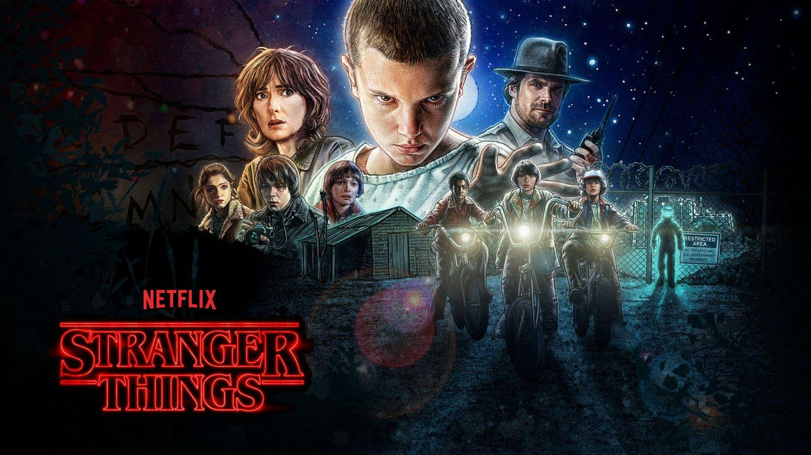

|

|
Stranger ThingsIMDB Rating - 8.8Rotten Tomatoes 93% Seasons - 3 Created by- Matt Duffer, Jessie Nickson-Lopez, Ross Duffer, Kate Trefry, Justin Doble, Paul Dichter |
The Duffer Brothers developed the series as a mix of investigative drama alongside supernatural elements portrayed with horror, science fiction and childlike sensibilities. Setting the series in the 1980s, the Duffer Brothers infused references to the pop culture of that decade while several themes and directorial aspects were inspired primarily by the works of Steven Spielberg, John Carpenter, and Stephen King, as well as anime and video games. They also took inspiration from strange experiments that took place during the Cold War and real world conspiracy theories involving secret government experiments.
Stranger Things has attracted record viewership on Netflix and has a broad, active, and international fan base. The series has received critical acclaim for its characterization, pacing, atmosphere, acting, soundtrack, directing, writing, and homages to 1980s films. The series has received multiple awards and nominations including 31 Primetime Emmy Award nominations (and six wins), four Golden Globe Award nominations, a British Academy Television Award nomination, two Directors Guild of America Award nominations, three Writers Guild of America Award nominations, and three Grammy Award nominations. It has won a Screen Actors Guild Award for Outstanding Performance by an Ensemble in a Drama Series, two American Film Institute awards, a Critics' Choice Television Award, and three People's Choice Awards, among others. In September 2019, the series was renewed for a fourth season. The Duffer Brothers have said that Stranger Things is likely to end after its fourth or fifth season.